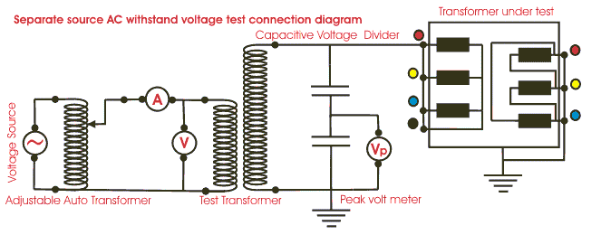
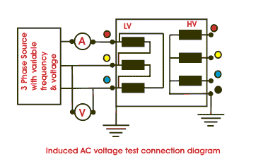

The dielectric test of transformer is generally performed in two different steps, likewise, separate source voltage withstand test and induced voltage withstand test of transformer, which we have discussed one by one below.
Separate Source Voltage Withstand Test of Transformer
This dielectric test is intended to check the the ability of main insulation to earth and between winding.
Procedure
- All three line terminals of the winding to be tested are connected together.
- Other winding terminals which are not under test and also tank of the transformer should be connected to earth.
- Then a single-phase power frequency voltage of shape approximately sinusoidal is applied for 60 seconds to the terminals of the winding under test.
- The test shall be performed on all the windings one by one.
- The test is successful if no break down in the dielectric of the insulation occurs during test.
voltage withstand test of transformer" title="Separate source AC withstand voltage test connection diagram" class="aligncenter"/>
In this transformer testing, the peak value of voltage is measured, that is why the capacitor voltage divider with digital peak voltmeter is employed as shown in the diagram above. The peal value multiplied by 0.707 (1/√2) is the test voltage.
The values of test voltage for different fully insulated winding are furnished below in the table.
| Nominal system voltage rating for equipment |
Highest system voltage rating for equipment |
Rated short duration power frequency withstand voltage |
|---|---|---|
| 415V | 1.1 KV | 3 KV |
| 11 KV | 12 KV | 28 KV |
| 33 KV | 36 KV | 70 KV |
| 132 KV | 145 KV | 230 / 275 KV |
| 220 KV | 245 KV | 360 / 395 KV |
| 400 KV | 420 KV | 570 / 630 KV |
| Winding with graded insulation, which has neutral intended for direct earthing, is tested at 38KV |
||
Induced Voltage Test of Transformer
voltage withstand test of transformer" title="Induced AC voltage test connection diagram" class="alignleft"/>
The induced voltage test of transformer is intended to check the inter turn and line end insulation as well as main insulation to earth and between windings-
- Keep the primary winding of transformer open circuited.
- Apply three phase voltage to the secondary winding. The applied voltage should be twice of rated voltage of secondary winding in magnitude and frequency.
- The duration of the test shall be 60 second.
- The test shall start with a voltage lower than 1/3 the full test voltage, and it shall be quickly increased up to desired value.
The test is successful if no break down occurs at full test voltage during test.
 by
by